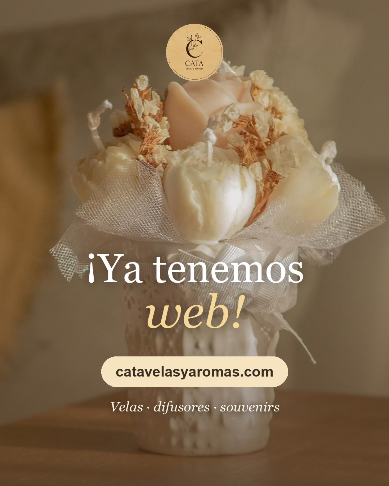
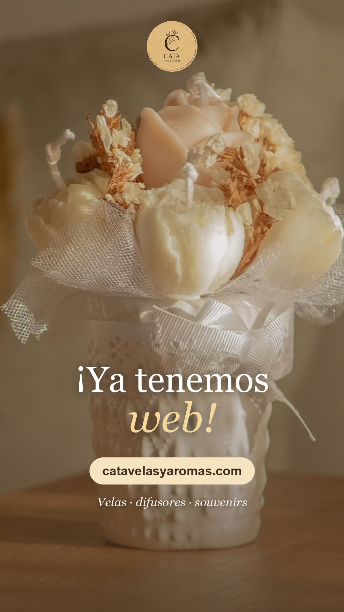

Un regalo de Tuimagen Studio · Para Cata
Si te gusta cómo quedó, acá te dejo todo preparado por si querés compartirla en tus redes. Es totalmente opcional y lleva un minuto. ¡Gracias por confiar en mí!

PublicaciónInstagram y Facebook Descargar
HistoriaInstagram y Facebook Descargar¿No se descarga? Mantené apretada la imagen y elegí «Guardar imagen». También tenés la web en computadora y en celular por si preferís otra foto.
Podés cambiarlo como quieras: es tu publicación. ¡Copiado!
Para una historia: subí la imagen de historia y sumá el sticker «Enlace» con catavelasyaromas.com. En Facebook los pasos son los mismos.
Si alguien que conocés necesita una web o ayuda con su publicidad, este es mi contacto. ¡Gracias por darme la oportunidad de hacer tu página!
Tuimagen Studio · Natalia García